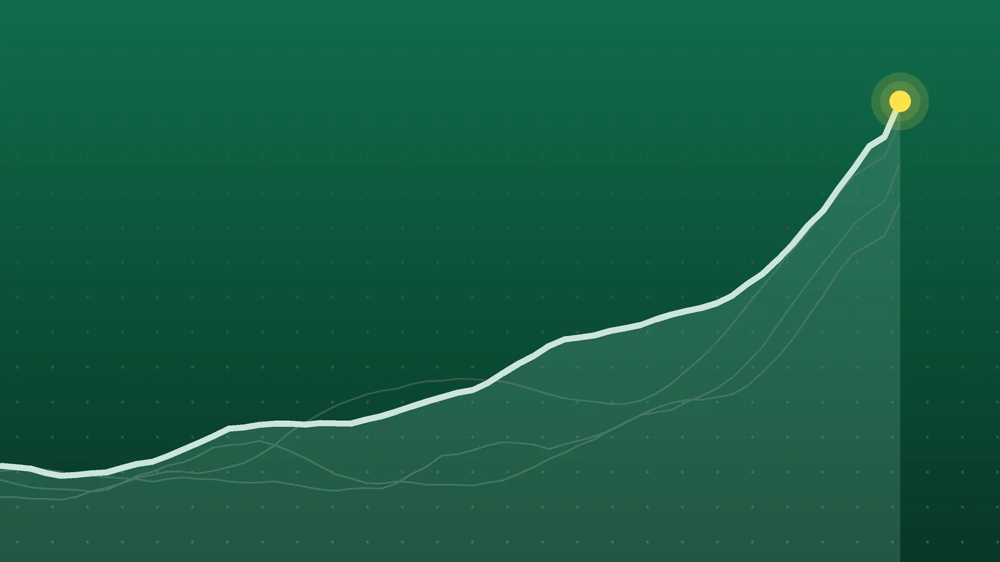

SportsExplainer
NBA Scores, Oct. 25: Doncic Scores 52 as Lakers Stay Unbeaten
Five teams left Sunday at 3-0, Philadelphia lost for the first time, and the defending champion Knicks are still looking for their first win.

Quick take
- Luka Doncic scored 52 points with eight 3-pointers as the Lakers beat Utah 132-123 to reach 3-0.
- Detroit led from start to finish in a 106-93 win at Philadelphia, ending the 76ers’ 3-0 start; Cade Cunningham had 26 points.
- Franz Wagner scored 21 of his 23 points in the fourth quarter as Orlando beat New York 111-102, leaving the Knicks 0-3.
- Oklahoma City beat the Clippers 108-101 but lost Jalen Williams, who left on a stretcher with 1:14 to play.
Why it's trending Seven NBA games on Sunday, Oct. 25, produced the league’s first 50-point game of the season, Philadelphia’s first loss and a third straight defeat for the defending champion Knicks.
NBA scores for Oct. 25
Luka Doncic produced the NBA’s first 50-point game of the season on Sunday, scoring 52 as the Lakers won 132-123 in Utah. He made eight 3-pointers, the most of anyone on the seven-game slate, according to Land of Basketball’s daily summary. Los Angeles is 3-0.
Philadelphia’s perfect start is over. Detroit, playing without two starters, beat a 76ers team missing Joel Embiid 106-93 and stayed unbeaten itself. In New York, Orlando came from 10 down in the final 10 minutes to hand the defending champion Knicks a third straight loss. None of the seven games needed overtime, and none was postponed.
All final scores
| Winner | Score | Loser | Note |
|---|---|---|---|
| Los Angeles Lakers | 132-123 | at Utah Jazz | Doncic 52 points, 10 assists; Lauri Markkanen 28 for Utah |
| Indiana Pacers | 136-109 | at Brooklyn Nets | Tyrese Haliburton 24 points, 10 assists; largest margin of the day |
| Oklahoma City Thunder | 108-101 | LA Clippers | Shai Gilgeous-Alexander 34; Jalen Williams carted off late |
| Orlando Magic | 111-102 | at New York Knicks | Franz Wagner 23 points, 13 rebounds, 9 assists |
| Minnesota Timberwolves | 117-94 | Toronto Raptors | Anthony Edwards 26 in 27 minutes in the home opener |
| Detroit Pistons | 106-93 | at Philadelphia 76ers | Cade Cunningham 26; Tyrese Maxey 29 for Philadelphia |
| Memphis Grizzlies | 123-112 | at Sacramento Kings | Ty Jerome 31, 14 of 14 at the line; Zach LaVine 37 |
Road teams went 5-2. Only Oklahoma City and Minnesota won at home.
Doncic takes over in Utah
The Jazz were ahead by 18 in the second quarter, and the Lakers did not lead at all until a Doncic step-back 3, launched with 4.1 seconds on the clock before halftime, made it 74-71, AP reported. Late in the fourth, he closed a 14-5 run with consecutive 3s that put Los Angeles up 127-121 with 1:42 left, KTVX reported.
Doncic also handed out 10 assists. Austin Reaves added 29, and the pair went 21 of 24 from the foul line. Doncic’s eight 3s nearly matched Utah’s team total of 10, per Bleacher Report. Keyonte George fell a rebound short of a triple-double for the Jazz (1-2), who committed 17 turnovers. The Lakers have won eight of the last nine meetings.
Detroit ends Philadelphia’s run
The Pistons never trailed. They opened 15-1 and led by 21 in the second quarter before a 9-0 Philadelphia burst cut it to 56-44 at the half, AP reported. The 76ers pulled within four in the fourth quarter but got no closer.
Cunningham finished with 26 points, eight rebounds and eight assists. Duncan Robinson made five of eight 3-point tries for 21, per The Detroit News. Detroit played without center Jalen Duren, sidelined for a minimum of two weeks by a right hamstring strain, and Ausar Thompson (ankle).
Playing for a second straight night, Philadelphia rested Embiid, and VJ Edgecombe sat with an abdominal contusion. LeBron James returned and scored 18, mostly playing center. Maxey had 29, but the Sixers shot 7 of 27 from deep, the Inquirer reported. They are now 3-1.
Wagner’s fourth quarter sinks New York
The Knicks trailed 12-0 at the start, recovered, and were up 86-76 with 9:20 to go. Wagner then supplied nine points during an 11-0 burst, and Orlando went ahead for the first time, 87-86, with 7:25 left, according to Field Level Media. Desmond Bane’s 3 broke a 91-91 tie for good.
Wagner scored 21 of his 23 points in the final period. Orlando finished the game on a 35-16 run as New York turned the ball over eight times in the fourth, AP reported. It was the first win for the Magic (1-2) under coach Sean Sweeney. They were already without Paolo Banchero, and Jalen Suggs left late with a knee injury.
Jalen Brunson scored 28 for New York. No reigning champion had opened 0-3 since the 2011-12 Dallas Mavericks.
What it means
After Sunday, five teams sit at 3-0: the Lakers, Detroit, Oklahoma City, Minnesota and Memphis. Houston, which reached 3-0 on Saturday, is also still unbeaten. Philadelphia, 3-0 entering the day, dropped out of that group.
- Minnesota has won its three games by 25, 22 and 23 points, a combined margin of 70, AP said. Toronto (2-1) played without Kawhi Leonard, whom the Raptors listed with swelling in his left knee.
- Memphis broke a 106-106 tie with 5:30 left and outscored Sacramento 17-6 the rest of the way, The Kings Herald reported. The Grizzlies were without Zach Edey, whose left ankle is being managed, AP said.
- Oklahoma City forced 26 turnovers, per TalkBasket, but the win came at a cost. Williams went down on a drive with 1:14 left and was taken off on a stretcher. Coach Mark Daigneault said no diagnosis was available right away and that he expected to learn more Monday morning, AP reported.
On the other side, the Knicks, Nets and Kings are all 0-3. Brooklyn gave up 112 points through three quarters against Indiana (2-1), SB Nation reported. Milwaukee and New Orleans fell to 0-3 on Saturday. For Saturday’s results, see our Oct. 24 roundup.
What’s next
Monday, Oct. 26, has nine games, all times ET, per Land of Basketball’s schedule:
- Minnesota at Cleveland, 7 p.m.
- Washington at Charlotte, 7 p.m.
- Chicago at Boston, 7:30 p.m.
- Dallas at Miami, 7:30 p.m.
- Indiana at Milwaukee, 8 p.m.
- Phoenix at Oklahoma City, 8 p.m.
- Atlanta at Houston, 8:30 p.m.
- Memphis at Utah, 9 p.m.
- Golden State at Denver, 10 p.m.
Four of Sunday’s winners play again on Monday: Minnesota, Indiana, Oklahoma City and Memphis. Memphis and Utah both played Sunday, so their meeting in Salt Lake City comes on consecutive nights for each.
Sources
- Land of Basketball NBA Daily Summary: Oct 25, 2026 - Key Stats, Game Scores & LeadersOct. 26, 2026
- Land of Basketball NBA Daily Summary: Oct 26, 2026 - Key Stats, Game Scores & LeadersOct. 26, 2026
- Associated Press via The Daily Gazette Luka Doncic scores NBA season-high 52 points in the Lakers' victory over the JazzOct. 25, 2026
- KTVX via Yahoo Sports Doncic scores 52 as Lakers beat Jazz, 132-123Oct. 26, 2026
- Bleacher Report Luka Scores 52 as Lakers Beat Jazz, Box Score Stats, Highlights for Peterson, Kessler, Ace, MoreOct. 25, 2026
- Associated Press via theScore Cunningham leads way as unbeaten Pistons deal 76ers 1st defeatOct. 25, 2026
- The Philadelphia Inquirer Shorthanded Sixers suffer their first loss of the season, 106-93, to the PistonsOct. 25, 2026
- The Detroit News via Yahoo Sports Cade Cunningham leads short-handed Pistons past 76ers to stay unbeatenOct. 26, 2026
- Associated Press via CBS News New York Wagner, Magic use big fourth quarter to drop Knicks to 0-3 with 111-102 victoryOct. 25, 2026
- Field Level Media Franz Wagner explodes in fourth as Magic keep Knicks winlessOct. 25, 2026
- Associated Press via NBA.com Thunder lose Jalen Williams to serious lower leg injury late in win over ClippersOct. 26, 2026
- TalkBasket.net Shai Gilgeous-Alexander scores 34 as Thunder beat ClippersOct. 26, 2026
- SB Nation via Yahoo Sports Nets can't keep up with Pacers, lose 136-109Oct. 26, 2026
- Associated Press via MPR News Timberwolves stay unbeaten with 117-94 win over Raptors in home openerOct. 26, 2026
- Associated Press via CBS News Sacramento Ty Jerome scores 31 points to lead the Grizzlies to a 123-112 win over the KingsOct. 25, 2026
- The Kings Herald Kings Fall to 0-3 as Grizzlies Pull Away Late, 123-112Oct. 25, 2026
Keep reading

NBA Opening Night: Pistons Erase 22-Point Hole to Beat Celtics
The 2026-27 NBA season opened with Detroit rallying past Boston 121-113 despite Paul George’s 38. Recap, tonight’s games and key dates for the season.

NBA Scores, Oct. 24: Nuggets Erase 23-Point Gap to Win in OT
NBA scores for Oct. 24, 2026: all 8 finals, including Denver’s 141-135 overtime comeback over New Orleans, Booker’s 43 for Phoenix and Philadelphia’s 3-0 start.

NBA Scores, Oct. 23: Hawks Rout Hornets by Franchise-Record 47
NBA scores for Oct. 23, 2026: all 12 final results, including Atlanta’s record 128-81 win at Charlotte, Rockets 114, Spurs 110 and Celtics 107, Knicks 103.